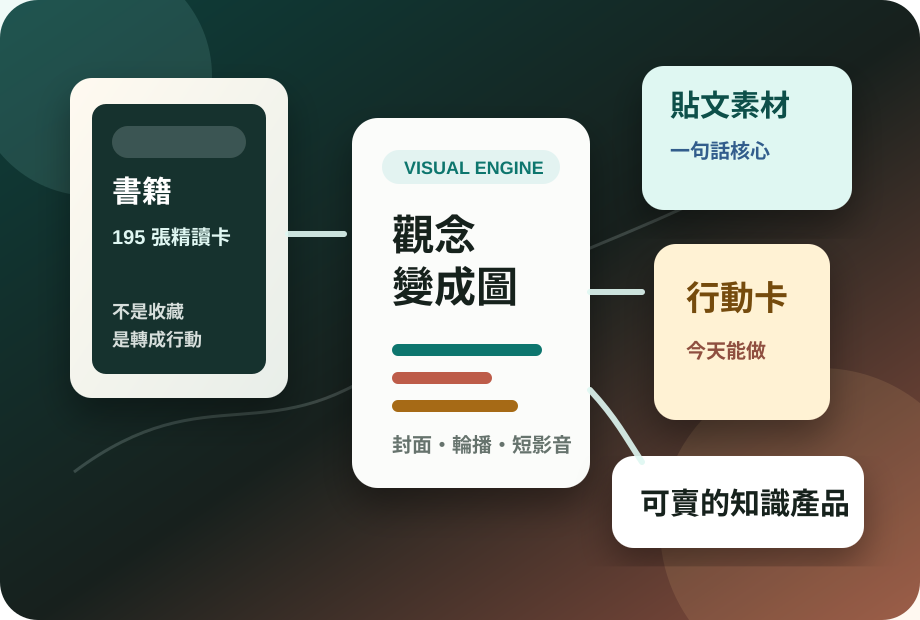

Knowledge Visual Studio
把書、高手觀點與人生問題，做成有辨識度的知識圖卡。
這裡不是收藏書單，而是一套圖片優先的知識產品原型：每本書都有封面、路線、核心句、行動建議與貼文角度。客戶一打開就要知道，這不是套版，是能把複雜內容做成畫面的能力。
自製封面規格
知識圖卡
貼文切片
學習路線

自製視覺，不是套版書單
給個人
把閱讀變成可執行的人生操作手冊
賣點不是摘要，而是把書轉成決策、習慣、親子、財商與職涯路線，讓人少走彎路。
給創作者
把書與高手內容變成可發文素材庫
每本書都能拆成一句話核心、短影音腳本、輪播圖大綱與台灣觀眾看得懂的例子。
給客戶
幫品牌做知識整理與圖片化包裝
把複雜產品、課程、專業知識整理成網站、簡報、封面、貼文與銷售說明。